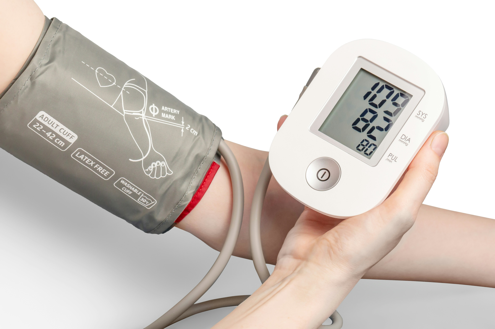

当院について
みなみクリニックは、地域の皆さまが心身ともに健やかに過ごせるよう、かかりつけ医として日々診療に取り組んでいます。
私たちは、「一人ひとりに寄り添う医療」を理念に掲げ、小さなお悩みやちょっとした体調の変化にも丁寧に耳を傾け、患者さまの不安に寄り添った診療を大切にしています。
▼ みなみクリニックが大切にしていること：
- 安心できる対話：問診・説明を丁寧に行い、納得のいく診療を提供します。
- 通いやすい環境：バリアフリー設計、キッズスペース、駐車場完備。
- 予防医療への取り組み：生活習慣病の早期発見や健康診断も実施。
- ご高齢の方・在宅療養中の方への配慮：訪問診療・在宅医療に力を入れています。
- スタッフ全員が親切・丁寧：医師・看護師・受付が連携し、安心のサポート。
当院では、乳幼児からご高齢の方まで、すべての年代の方が安心して通えるよう、やさしく、わかりやすく、丁寧な診療を心がけています。
どんな些細なことでも構いません。ご自身やご家族の健康に関して気になることがあれば、ぜひお気軽にご相談ください。
診療内容
一般内科
風邪・生活習慣病・体調不良など幅広く対応します。
小児科
発熱や予防接種など、お子さまの健康をサポート。
生活習慣病外来
高血圧や糖尿病など、生活習慣に合わせた診療。
在宅医療
通院が難しい方へ、訪問による診療を行っています。
予防接種外来
各種ワクチン接種に対応。インフルエンザ、風しん、肺炎球菌などの予防接種を実施しています。

健康診断
一般健診・企業健診など、各種健康診断を実施。早期発見・予防にお役立てください。
診療予約・ご相談
初めての方もお気軽にご相談ください。
- 電話：0985-00-0000
- メール：info@minami-clinic.jp
アクセス
〒000-0000 宮崎県○○市△△町1-2-3
○○駅より徒歩5分、駐車場完備